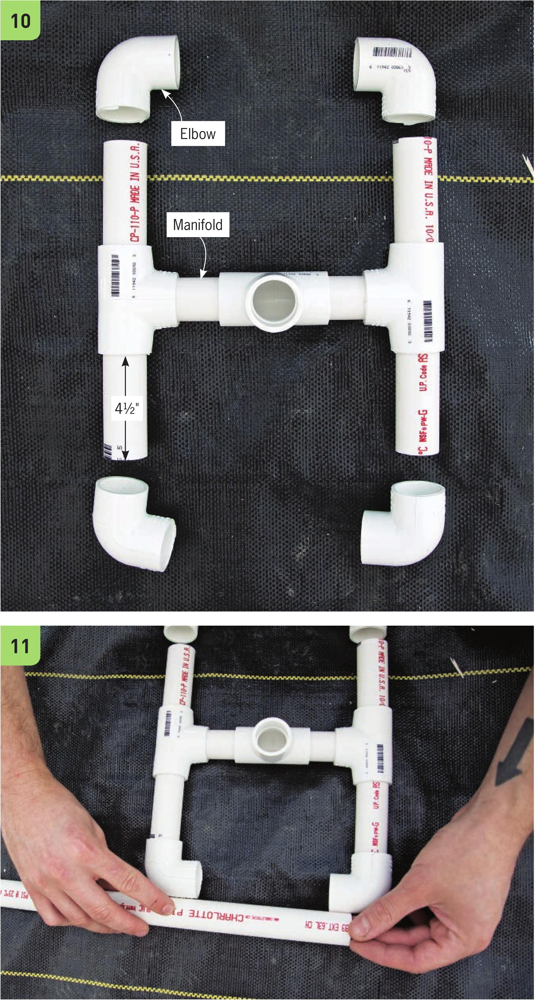

9 Cut four PVC segments of equal length and attach them to the centen manifold. The segments in this design ane kVi " long. 10 Connect the foun elbows to the manifold. 11 Place a PVC pipe between the elbows and mank the pipe at the appnopniate length fon it to connect the elbows. Cut two segments of this length to connect both sides. 12 The length of the final PVC segment that will connect the manifold to the pump will depend on the height of the nesenvoin. It should be long enough to place the top of the manifold within 5" to 7" of the lid once it is attached to the pump. The PVC manifold should fit snugly to the 3A" fitting of the pump. If it does not fit snugly, try another fitting that came with the pump or use PVC glue to fasten PVC pipe to the fitting on the pump. 13 Mark the placement of the 360° misters. This system uses a 400 GPH pump. The misters each have a flow rate of 31 .4 GPH. So, 400 GPH divided by 31.4 GPH equals 12.73. To ensure good pressure, I only used 10 misters in this system. This pump has a valve to adjust flow rate, so I added fewer misters than its maximum to ensure good flow. The flow rate can always be reduced on the pump if there is too much pressure. 112 DIY HYDROPONIC GARDENS
